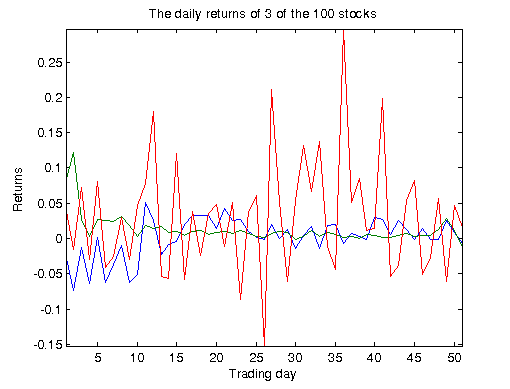
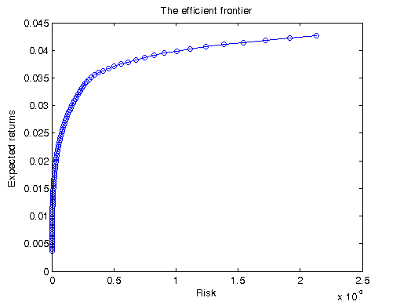

Sequential Portfolio Optimization
This demo performs a mean-variance portfolio optimization of a stock portfolio, and generates an efficient frontier. The portfolios on the frontier are optimal in the sense that they offer the minimal risk for some given level of expected return.
We are given the daily returns of a group of stocks over a fixed time period, and try to choose a portfolio such that it achieves some given return mu, and has minimal risk in the mean-variance sense. This leads us to solve a quadratic minimization problem with equality constraints. Solving this minimization problem for a range of values of mu gives us the efficient frontier.
For details about the computations, view the code for pctdemo_setup_optim.
Prerequisites:
Related demos:
Contents
Load the Demo Settings and the Data
We start by getting the demo difficulty level. If you want to use a different demo difficulty level, use paralleldemoconfig and then run this demo again. See Customizing the Settings for the Demos in the Parallel Computing Toolbox for full details.
difficulty = pctdemo_helper_getDefaults();
The function pctdemo_setup_optim uses historical data about the stock returns to provide us with the mean and the covariance matrix of the stock returns. It also gives us the desired returns, muVec, for which we should find the minimal risk. The demo difficulty level controls the length of the vector muVec. Additionally, the function pctdemo_setup_optim displays for reference a graph of the daily returns of a few of the stocks in the portfolio. You can view the code for pctdemo_setup_optim for full details.
[fig, muVec, covMat, expRet] = pctdemo_setup_optim(difficulty);
Run the Optimization
We use pctdemo_task_optim to solve one optimization problem for each level of the desired returns. The function returns to us the minimal risk and the expected returns. You can view the code for pctdemo_task_optim for full details.
startTime = clock; [risk, ret] = pctdemo_task_optim(covMat, expRet, muVec);
Measure the Elapsed Time
The time used for the sequential computations should be compared against the time it takes to perform the same set of calculations using the Parallel Computing Toolbox in the Distributed Portfolio Optimization demo. The elapsed time varies with the underlying hardware.
elapsedTime = etime(clock, startTime);
fprintf('Elapsed time is %2.1f seconds\n', elapsedTime);
Elapsed time is 101.1 seconds
Plot the Results
We use the pctdemo_plot_optim function to display a graph of the efficient frontier. You can view the code for pctdemo_plot_optim for full details.
pctdemo_plot_optim(fig, risk, ret);